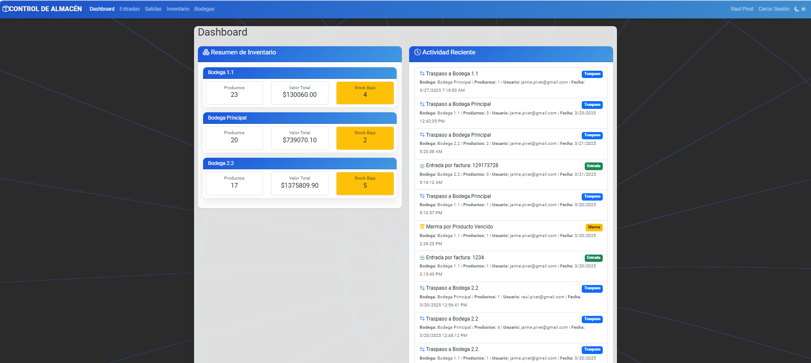

Cliente
Control de Almacén
Sistema completo de gestión de inventario con seguimiento en tiempo real, alertas de stock y dashboard administrativo.
Ver proyectoSoluciones tecnológicas que transforman ideas en realidad

Sistema completo de gestión de inventario con seguimiento en tiempo real, alertas de stock y dashboard administrativo.
Ver proyecto
Plataforma web para restaurantes con menús digitales, filtros por categorías y precios actualizables en tiempo real.
Ver proyectoWebsite responsive para empresa de transporte con calculadora de tarifas, reservas online y mapa de cobertura.
Ver proyecto en vivoSistema de monitoreo en Power BI para 30+ almacenes con custom visuals en TypeScript. Pipeline completo: GitHub Actions genera reportes JSON nocturnos, Power Automate los procesa contra Dataverse y despacha 50+ correos diarios con adjuntos Excel a gerentes de cada sucursal.
Ver detallesAnálisis de negativos · Detección de faltantes
App Streamlit que cruza fotografías de almacén con el reporte nocturno de productos en stock negativo. Detecta si el negativo será resuelto durante el día según los movimientos del ERP. Si no hay cruce, alerta sobre posibles faltantes de ingreso o errores de registro.
Ver app en vivo